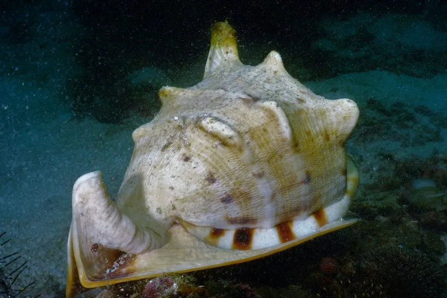

软体动物 · 动物界
唐冠螺 Cassis cornuta

壳口外缘长着角状突起的巨型海螺，形似唐代冠帽，是中国南海名贵的观赏贝类，体型在冠螺科中最大。
- 分类
- 门软体动物门纲腹足纲目中腹足目科冠螺科属冠螺属
- 栖息环境
- 热带珊瑚礁和沙底，水深 1–30 m
- 地理分布
- 印度洋—太平洋热带海域，从东非、红海到日本南部、澳大利亚和波利尼西亚，中国南海及台湾周边有分布
- 保护级别
- 暂无评估；中国未列入国家重点保护野生动物名录
物种志
唐冠螺的贝壳大型而厚重，呈卵圆形或球形，壳口宽大，唇缘向外翻卷并长着一列角状突起，形似古代冠帽，因此得名。壳面淡黄或灰白色，带有褐色斑纹，壳内面呈淡橙色或白色。成体壳长可达 25–35 cm，是冠螺科中体型最大的种类。
唐冠螺分布于印度洋—太平洋的热带珊瑚礁，从东非、红海到日本南部、澳大利亚和波利尼西亚，中国南海及台湾周边有分布。它栖息于礁区和沙底，水深 1–30 m，是肉食性贝类，捕食海胆、海星等棘皮动物。唐冠螺的贝壳造型独特、体量可观，被大量采集作为工艺品和收藏品，在贝壳市场上价格不低。它是雌雄异体的动物，交配后产下卵囊，卵囊附着在沙底或礁石上。由于过度采集，部分海域的唐冠螺数量有所下降。目前它没有IUCN 的正式评估，中国未将其列入国家重点保护野生动物名录。
形态与习性
- 食性肉食性，捕食海胆、海星等棘皮动物
- 壳长可达 25–35 cm，是冠螺科中体型最大者
- 栖息深度珊瑚礁和沙底，水深 1–30 m
- 外形壳口外缘向外翻卷，长着一列角状突起
- 繁殖雌雄异体，交配后产下卵囊
- 贝壳用途被大量采集作工艺品和收藏品
趣味知识
- 唐冠螺的壳口外缘长着一列角状突起，形似唐代冠帽。
- 它是冠螺科中体型最大的种类，壳长可达 35 cm。
- 唐冠螺是肉食性贝类，捕食海胆和海星等棘皮动物。